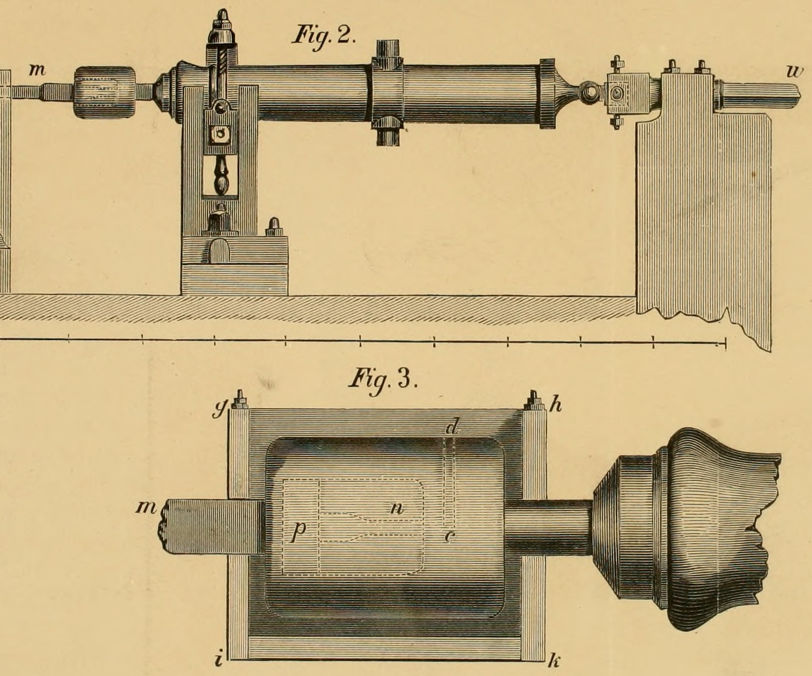
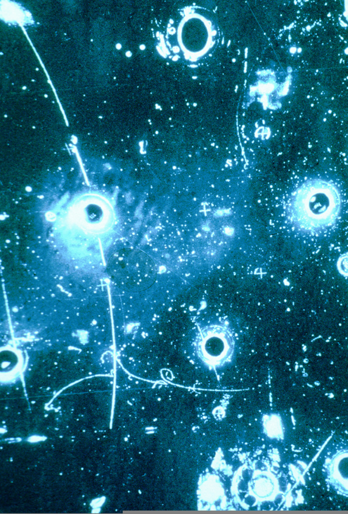
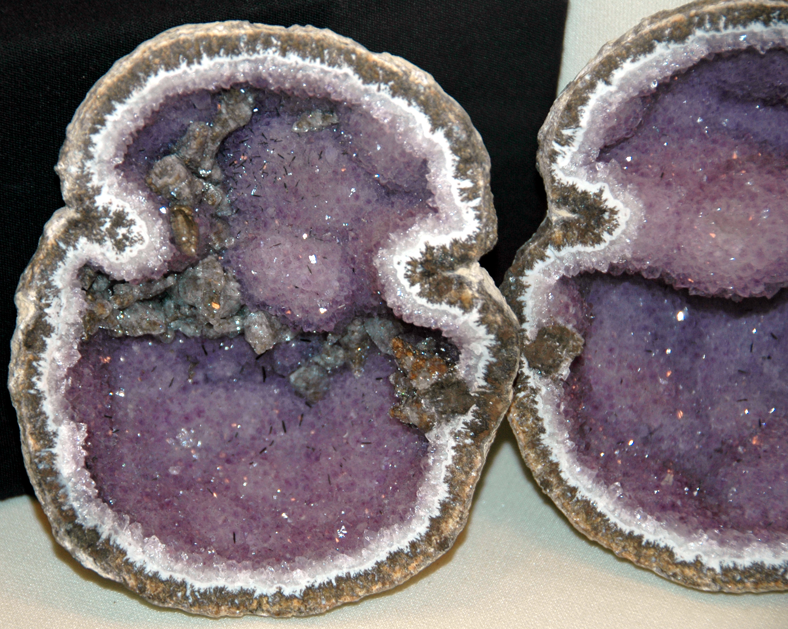
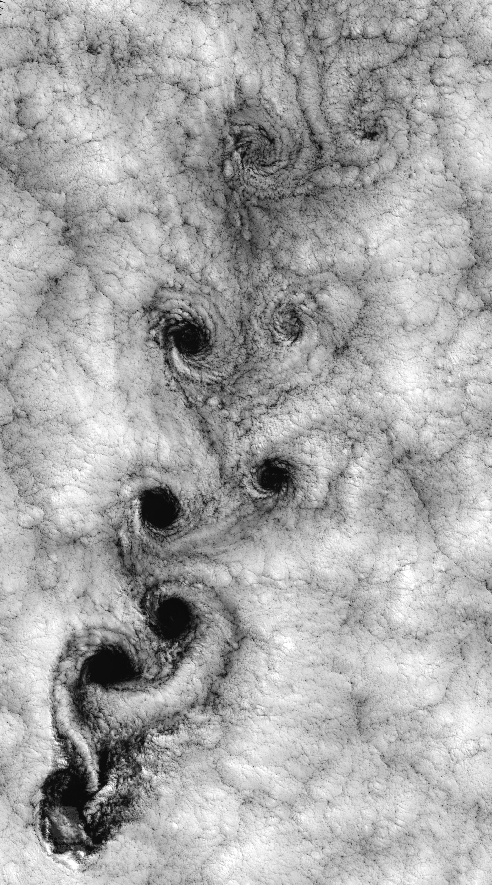
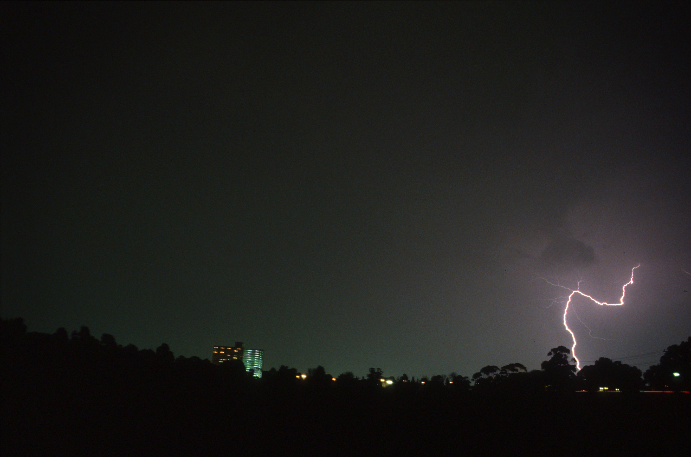
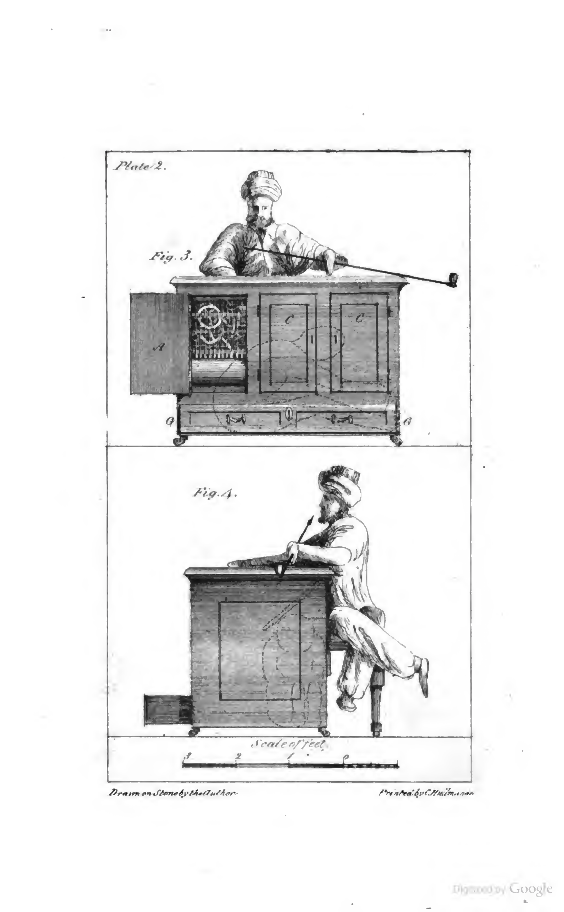
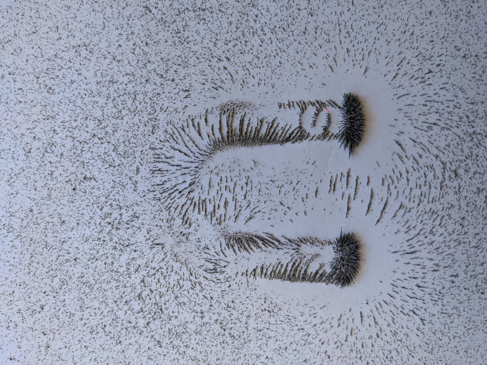
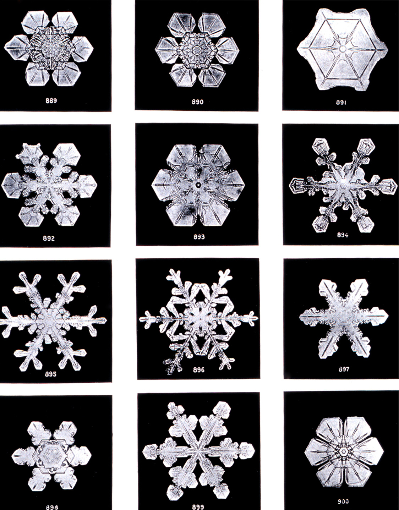

007 — The Vacuum Is Not Empty
vacuum-fluctuation.jpg — Casimir effect visualization with virtual photons between plates.

caloric-map.jpg — Rumford's cannon-boring experiment (1798), historical illustration. Public domain.

bubble-tracks.jpg — CERN Gargamelle bubble chamber, particle tracks. Events literally made visible.

geode-inside.jpg — Amethyst/calcite geode cross-section (Mexico). Hard exterior, crystalline interior.

wave-pattern.jpg — Von Kármán vortex street in clouds (Juan Fernández Islands). A pattern, not a thing.

lightning-branch.jpg — Branching lightning (CSIRO). Spontaneous, unpredictable, everywhere.

music-automaton.png — The Turk chess automaton (1821 illustration). What's inside the box?

vacuum-fluctuation.jpg — Casimir effect visualization with virtual photons between plates.
magnetic-field.jpg — Iron filings around a horseshoe magnet. The invisible field made visible.

snowflake-bentley.jpg — Wilson Bentley snowflake microphotographs (~1902). Public domain.

mandelbrot-whole.jpg — The classic Mandelbrot set. Routine iteration producing self-referential complexity.